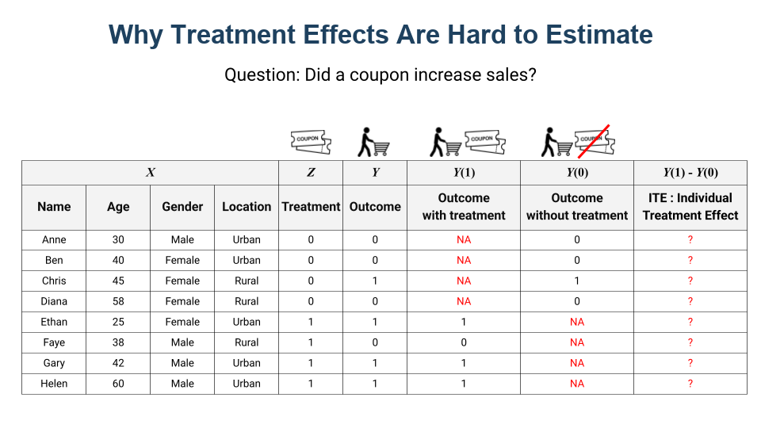
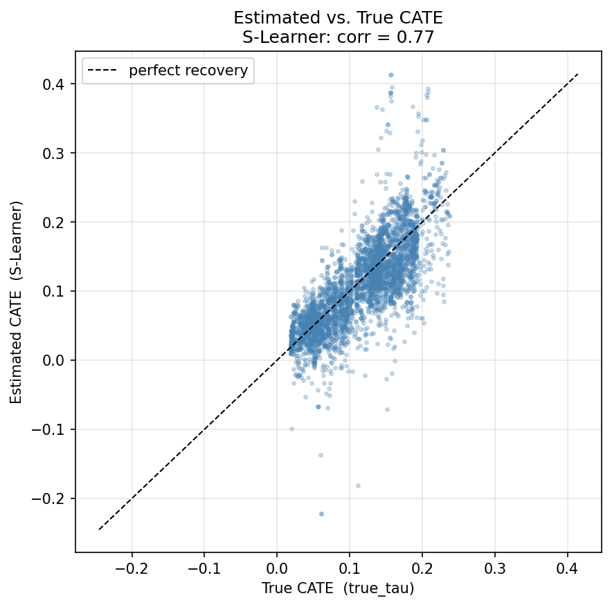
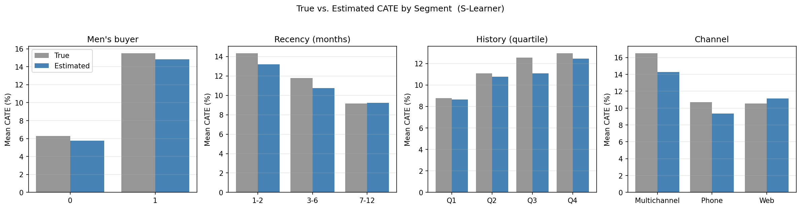
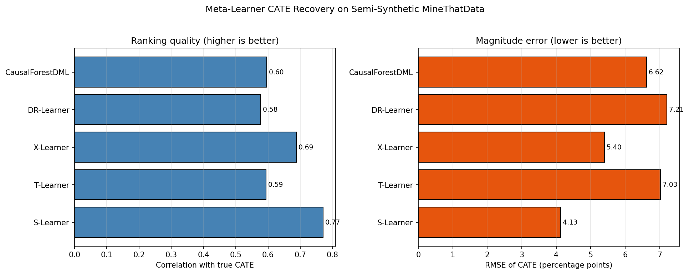

3.4 Meta Learners for Treatment Effects
The methods in previous chapters estimate a single number: the Average Treatment Effect (ATE), or the average impact of a treatment across everyone. But in marketing, averages can be misleading. For example, a coupon might increase purchases by 5% on average, but that number hides the real story. Some customers might respond with a 20% lift, while others see no effect or even a drop. If you could identify which customers actually respond, you could spend your budget much more effectively.
Meta-learners try to estimate treatment effects for each individual customer. But what does that actually look like in practice?
Treatment Effects: ATE, CATE, ITE
To define the treatment effect, we turn to the Potential Outcomes Framework. The treatment effect is the difference in outcomes caused by a treatment: formally, \(\tau = Y(1) - Y(0)\), where \(Y(1)\) is the outcome under treatment and \(Y(0)\) is the outcome under control. For example, if the potential purchase rate with a coupon is 20% and the rate without it is 10%, the treatment effect is 10%.

Now, there are three levels of granularity:
- ATE (Average Treatment Effect): the effect averaged across all customers. “Did the coupon increase sales?”
- CATE (Conditional Average Treatment Effect): the average effect for customers with specific characteristics. “Did the coupon work better for urban customers under 30?”
- ITE (Individual Treatment Effect): the effect for a specific individual. Unobservable in practice, but CATE provides our best estimate.
Why does this matter? Because not all customers behave the same way. A price-sensitive customer might jump at a discount, while a brand-loyal customer would have bought at full price anyway. If you know who is who, you can target discounts where they actually drive extra sales, instead of giving away margin to customers who would have purchased regardless.
Why We Need Meta Learners
Consider this question: did a coupon increase sales? To answer it, we look at data from various customers, including their attributes (age, gender, location), the treatment (coupon or no coupon), and the outcome (purchase or not).
The column \(Y(1)\) represents the outcome when the coupon is used, while \(Y(0)\) represents the outcome without the coupon. If we had both columns for the same individual, calculating the treatment effect would be as simple as subtracting one from the other. But the challenge is that we can only observe one outcome for each individual.

To solve this, we use meta-learners. These are machine learning frameworks that predict what would have happened if a customer had received the other treatment. By filling in these missing counterfactuals, we can estimate the treatment effect for each person.
S-Learner: Start with a Single Model
The “S” in S-learner stands for “Single,” because it relies on a single machine learning model. We train it on all the data, with the treatment indicator included as just another feature. To estimate the effect for a customer with characteristics \(x\), we ask that one model for two predictions:
\[\hat{Y}(1 \mid X=x) = \text{predicted outcome if treated}\]
\[\hat{Y}(0 \mid X=x) = \text{predicted outcome if not treated}\]
The estimated treatment effect is the difference between them:
\[\hat{\tau}(x) = \hat{Y}(1 \mid X=x) - \hat{Y}(0 \mid X=x)\]
In code, the S-learner gets these two predictions from the same model: once with the treatment set to 1, and once with it set to 0.

Pseudo-code:
# Train a single model with treatment as a feature
X = df[['age', 'gender', 'location', 'treatment']]
y = df['sales']
model = xgb.XGBRegressor()
model.fit(X, y)
# Predict outcomes under treatment and control
df['sales_treated'] = model.predict(X.assign(treatment=1))
df['sales_control'] = model.predict(X.assign(treatment=0))
# Treatment effect = difference
df['treatment_effect'] = df['sales_treated'] - df['sales_control']
ATE = df['treatment_effect'].mean()S-learner is the simplest way to start, and often a reasonable baseline. But it has a key weakness: if the treatment effect is small compared to other features, the model can end up ignoring the treatment variable, especially if you use regularization. This means your CATE estimates can be biased toward zero.
T-Learner: Two Separate Models
The “T” in T-learner stands for “Two.” Instead of one model, we train two separate models: one on the treated group and one on the control group. We get \(\hat{Y}(1 \mid X=x)\) from the treated model and \(\hat{Y}(0 \mid X=x)\) from the control model, then take the difference:
\[\hat{\tau}(x) = \hat{Y}(1 \mid X=x) - \hat{Y}(0 \mid X=x)\]

Pseudo-code:
# Split data into treated and control
df_treated = df[df['treatment'] == 1]
df_control = df[df['treatment'] == 0]
# Train separate models
model_treated = xgb.XGBRegressor()
model_treated.fit(df_treated[['age', 'gender', 'location']], df_treated['sales'])
model_control = xgb.XGBRegressor()
model_control.fit(df_control[['age', 'gender', 'location']], df_control['sales'])
# Predict and subtract
df['sales_treated'] = model_treated.predict(df[['age', 'gender', 'location']])
df['sales_control'] = model_control.predict(df[['age', 'gender', 'location']])
df['treatment_effect'] = df['sales_treated'] - df['sales_control']
ATE = df['treatment_effect'].mean()T-learner is more flexible because each model can learn different patterns for treated and control groups. But there is a tradeoff: it can have high variance, especially if your treatment and control groups are imbalanced. When you subtract the predictions, errors from both models can add up.
So, S-learner is simple but tends to underestimate effects. T-learner fixes that bias but can be noisy. What can we do next?
Advanced Meta-Learners
Beyond S and T, several more sophisticated methods address their limitations:
- X-Learner: An extension of T-learner designed for imbalanced treatment groups. It imputes the missing counterfactuals and combines them using propensity-score weighting. Works well when one group is much larger than the other.
- DR-Learner (Doubly Robust): Combines outcome modeling and propensity score estimation. Consistent if either model is correctly specified, hence “doubly robust.”
- DML (Double Machine Learning): Uses cross-fitting to avoid overfitting bias, with strong theoretical guarantees. More computationally expensive (~27x slower than S-learner) but provides proper confidence intervals.

Theory tells us what each method is supposed to optimize. But the real test is seeing how they perform on the same dataset, where you can see the practical differences.
Example: Estimating Heterogeneous Email Effects
To see how these methods behave, we need a dataset where we can check their work. That is harder than it sounds. In real data we never observe a customer’s true treatment effect, so we cannot tell whether a meta-learner recovered the right pattern or just produced plausible noise.
We solve this with a semi-synthetic example built on Kevin Hillstrom’s MineThatData email experiment, a classic marketing dataset of 64,000 customers randomized to a men’s-merchandise email, a women’s email, or no email. We keep the real customer features (recency, purchase history, channel, and the rest) and the real randomized assignment for the binary contrast of men’s email versus no email. Only the outcomes are simulated: we define a baseline purchase probability and a treatment effect \(\tau(x)\) that is larger for men’s-merchandise buyers, recently active customers, and multichannel shoppers. Because we wrote \(\tau(x)\) ourselves, we know each customer’s true CATE and can grade every learner against it.
This is a teaching device. The goal is not to estimate the average effect better than the experiment already does, but to check whether a meta-learner recovers the heterogeneity we planted.
Companion notebook: sec3.4_meta_learners.ipynb compares S-, T-, X-, and DR-learners and CausalForestDML against the known true CATE on the semi-synthetic MineThatData experiment.
View on GitHub · Open in Colab
All five learners recover the average effect and, more usefully, the segment-level pattern. The scatter below compares estimated CATE against the true effect for a representative learner. The estimates cluster around the 45-degree line, so customers are ranked in roughly the right order, with vertical spread that reflects the noise of binary outcomes.

Averaging within segments makes the recovery clearer. Across men’s buyers, recency, purchase history, and channel, the estimated effect tracks the true effect closely, recovering the higher response among men’s buyers, recent customers, and multichannel shoppers.

Which learner ranks customers best is data-dependent. On this clean, balanced experiment the simple S-learner and the X-learner come out ahead, while the two-model and cross-fitting learners pay a variance cost. On noisier or imbalanced data the order can change, which is exactly why you check recovery rather than trusting one method by reputation.

What to Check Before Trusting CATE
This example was forgiving by design: randomized treatment, perfect overlap, and a known answer. Real projects rarely are. Before you act on CATE estimates:
- The individual treatment effect is never observed in real data. We could grade the learners here only because we simulated the truth.
- CATE is a model estimate, not a measurement. Read it at the group or segment level, not as a literal number for one customer.
- Sanity-check the average. If the mean estimated CATE is far from a simple difference in means on an experiment, something is wrong.
- Check stability across learners. If S, T, X, and the causal forest disagree on the ranking, trust none of them yet.
- Watch overlap. Where treated and control customers do not coexist, CATE is an extrapolation rather than an estimate.
We now have per-customer estimates of where the treatment effect is larger or smaller. The next section turns those estimates into targeting decisions.
Key Takeaways
- ATE answers “did it work on average”; CATE asks “for whom did it work.” Targeting needs the second, and meta-learners estimate it by using machine learning to fill in each customer’s missing counterfactual.
- S-learner is the simplest baseline but can bias effects toward zero when the treatment signal is weak; T-learner removes that bias at the cost of higher variance. X-, DR-, and DML-learners trade extra machinery for robustness on imbalanced or confounded data.
- Which learner ranks customers best is data-dependent. Grade recovery on your own data, with a semi-synthetic benchmark if needed, rather than trusting any method by reputation.
- CATE is a group-level model estimate, not a per-customer measurement. Run the checks above, from the mean against the experimental difference to learner stability and overlap, before spending budget on it.